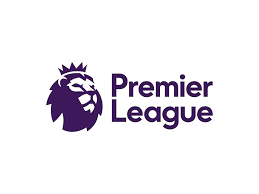
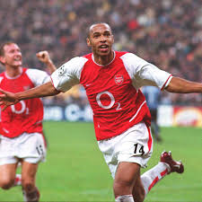
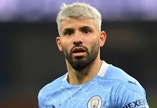

Premier League este prima ligă de fotbal din Anglia și una dintre cele mai urmărite competiții din lume. A fost înființată în 1992, înlocuind vechiul First Division, și reunește 20 de echipe care se luptă anual pentru titlul de campioană.
Datorită intensității jocului, stadionelor pline și atmosferei extraordinare, Premier League este considerată cea mai competitivă ligă din fotbalul mondial. Cluburi celebre precum Manchester United, Liverpool, Chelsea, Arsenal sau Manchester City domină scena europeană.

Thierry Henry
Arsenal
Legenda clubului Arsenal, un atacant de clasă mondială.

Sergio Agüero
Manchester City
Golgeter legendar și erou al titlului dramatic din 2012.